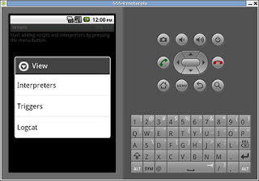
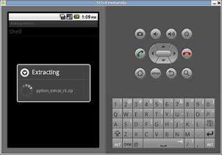

Instalar python en Android
Posted on dom 06 junio 2010 in Tutorial Python • 2 min read
Este artículo explicará como instalar python en Android desde el emulador para poder mostrar las capturas de pantalla y ese procedimiento es el mismo para instalar python desde el celular.
Lo primero que se necesita hacer es iniciar el emulador como se explico en el artículo de instalación del SDK de Android.
Al ejecutar adb devices encontrarán un dispositivo virtual funcionando.
ernesto@zvezda:~/android-sdk-linux_86/tools$ ./adb devices List of devices attached emulator-5554 device
Luego se baja el programa ASE desde el siguiente enlace.
ernesto@zvezda:~/android-sdk-linux_86/tools$ ./adb install ../../Descargas/ase_r22.apk 868 KB/s (217639 bytes in 0.244s) pkg: /data/local/tmp/ase_r22.apk Success
Esto indica que se instalo sin problemas el programa ASE.
En la siguiente figura se muestra el home del emulador con ASE instalado.

Al darle clip al icono de ASE aparece la una información donde nos pide que se agreguen scripts o interpretes presionando el botón menú como lo muestra la siguiente figura:
Al darle menú aparecen varias opciones como lo son: Agregar, Ver, Preferencias, Ayuda, Actualizar. Siguiente figura:

Al darle View o Ver aparecerá un menú donde se tiene varias opciones para visualizar, en este caso se quiere visualizar interpretes. Siguiente figura:

Al darle clip a Interpretes aparecerá sólo como interprete Shell y las opciones Agregar, Iniciar servidor, Preferencias y Ayuda. En este caso se va a agregar un interprete nuevo.
Al darle clip a agregar aparecerá una lista de interpretes que en este caso se instalará python. Siguiente figura:
Al seleccionar Python 2.6.2 se inicia el proceso de instalación del interprete y de algunos scripts como lo muestran las 2 siguientes figuras:


Ahora aparece Python aparte de Shell en la lista de interpretadores como lo muestra la siguiente figura:

Para probar que todo está funcionando se selecciona el interpretador y este se ejecutará como lo muestra la figura:
Por último se lista los scripts en python de ejemplo para trabajar con Android:
En siguientes artículos se explicará el uso de los scripts para ir creando una aplicación para Android.
===
¡Haz tu donativo! Si te gustó el artículo puedes realizar un donativo con Bitcoin (BTC) usando la billetera digital de tu preferencia a la siguiente dirección: 17MtNybhdkA9GV3UNS6BTwPcuhjXoPrSzV
O Escaneando el código QR desde billetera: